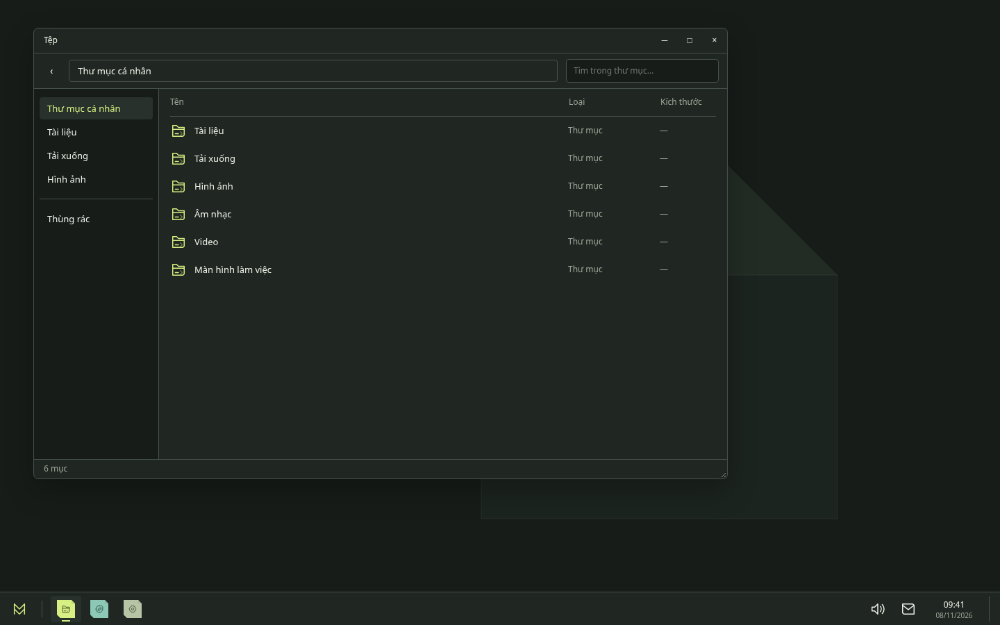
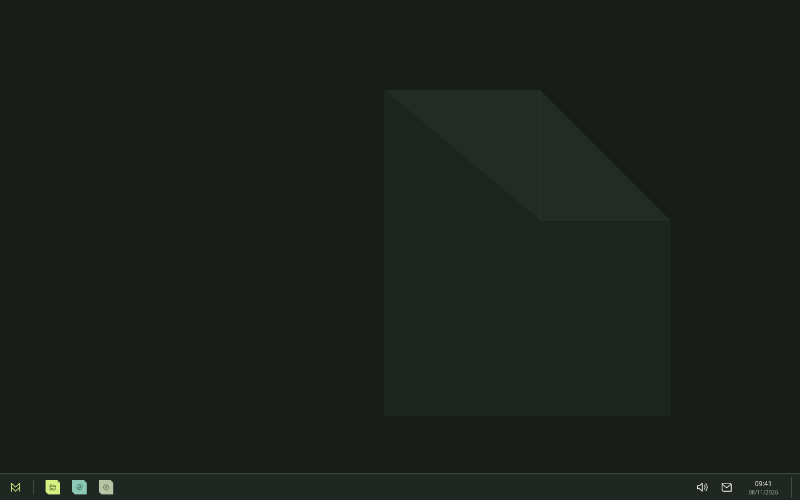

Quen thuộc để bắt đầu
Menu ứng dụng, thanh tác vụ và quản lý cửa sổ dựa trên KDE. Không cần một cách làm việc hoàn toàn mới.
MỘT HỆ ĐIỀU HÀNH ĐANG THÀNH HÌNH
Dễ tiếp cận trong những việc hằng ngày.
Vẫn rộng mở cho những gì bạn muốn làm thêm.
Đang phát triển · Chưa có bản phát hành ổn định

01 — TRẢI NGHIỆM
Hướng thiết kế của MyKOS bắt đầu từ một desktop thoáng, thanh tác vụ quen thuộc và những cửa sổ ưu tiên nội dung. Bạn mở điều mình cần, khi mình cần.

Một hình nền, một thanh tác vụ. Phần còn lại dành cho việc bạn đang làm.
Ảnh bản mẫu thiết kế · Không phải ảnh chụp từ ISOMenu ứng dụng, thanh tác vụ và quản lý cửa sổ dựa trên KDE. Không cần một cách làm việc hoàn toàn mới.
Màu xanh mực, sắc giấy và bộ biểu tượng Fold. Nhận diện riêng nằm trong chi tiết, không lấp đầy màn hình.
Định hướng của MyKOS là cấu hình mặc định dễ dùng, đồng thời giữ khả năng tùy chỉnh của Linux.
02 — NỀN TẢNG
MyKOS tích hợp những thành phần nguồn mở có sẵn, tập trung vào cách chúng cùng phục vụ người dùng.
Đọc kiến trúc dự ánBản dựng đầu tiên dùng Ubuntu 24.04 LTS, với APT/DEB cho hệ thống và các thành phần tích hợp.
Dùng Plasma và KWin, ưu tiên cấu hình và tài nguyên giao diện thay vì viết lại toàn bộ môi trường làm việc.
Ứng dụng Workspace thử nghiệm dùng Qt 6/QML. Đây là ứng dụng tùy chọn, không thay thế desktop.
CÔNG CỤ QUEN THUỘC
Các ứng dụng KDE đã được chọn trong danh sách gói của bản dựng.

Dolphin

Kate

Konsole

KDE System Settings
03 — ĐANG PHÁT TRIỂN
MyKOS đang ở những mốc phát triển đầu tiên. Mỗi bước cần có kết quả kiểm thử, không chỉ một giao diện đẹp.
Xem lộ trìnhĐÃ CÓ KẾT QUẢ
Pipeline trên GitHub Actions đã tạo và lưu ISO cùng mã kiểm tra SHA-256.
ĐÃ CÓ KIỂM THỬ
Bản sao ISO có console chẩn đoán đã đi qua BIOS tới môi trường người dùng.
ĐANG HOÀN THIỆN
Cần tiếp tục nghiệm thu phiên Plasma, cấu hình M1 và tích hợp trình cài đặt.
TRƯỚC KHI BẠN THỬ
Chưa. Dự án chưa có bản phát hành ổn định và chưa hoàn tất kiểm thử cài đặt, desktop, cập nhật, phục hồi hoặc phần cứng thật. Bản dựng hiện tại dành cho phát triển và thử nghiệm.
Bạn có thể theo dõi workflow tạo ISO trên GitHub Actions. Artifacts có thời hạn lưu và có thể yêu cầu đăng nhập, quyền truy cập repo. Chỉ thử trong máy ảo với dữ liệu dùng riêng; hiện chưa có quy trình cài đặt được nghiệm thu đầy đủ.
Không. Các ảnh là bản mẫu thiết kế M1, dùng để rà soát bố cục và định hướng nhận diện. Một số cấu hình Plasma đã được đưa vào mã nguồn nhưng vẫn cần kiểm chứng trong bản dựng mới.
Dự án chưa có kết quả kiểm chứng lớp tương thích Windows và không cam kết chạy được mọi phần mềm hoặc trò chơi Windows. Mục tiêu ban đầu là một môi trường Linux cơ bản hoạt động đáng tin cậy.
THEO DÕI TỪ NHỮNG BẢN DỰNG ĐẦU TIÊN